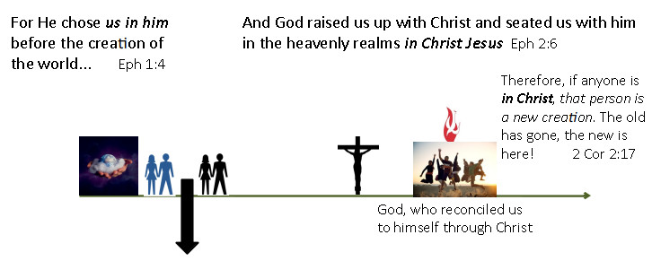

Living in the reality of being in Christ
Listen to the sermon:
Praise be to the God and Father of our Lord Jesus Christ, who has blessed us in the heavenly realms with every spiritual blessing in Christ. For He chose us in him before the creation of the world to be holy and blameless in his sight. In love He predestined us for adoption to sonship through Jesus Christ, in accordance with his pleasure and will. Eph 1:3-5
So from now on we regard no one from a worldly point of view. Though we once regarded Christ in this way, we do so no longer. Therefore, if anyone is in Christ, that person is a new creation. The old has gone, the new is here! All this is from God, who reconciled us to himself through Christ... 1Cor 5:16-18a
Since, then, you have been raised with Christ, set your hearts on things above, where Christ is, seated at the right hand of God. Set your minds on things above, not on earthly things. For you died, and your life is now hidden with Christ in God. When Christ, who is your life, appears, then you also will appear with him in glory. Col 3:1-4
And God raised us up with Christ and seated us with him in the heavenly realms in Christ Jesus. Eph 2:6
Scripture quotations marked (NIV) are taken from the Holy Bible, New International Version®, NIV®. Copyright © 1973, 1978, 1984, 2011 by Biblica, Inc.™ Used by permission of Zondervan. All rights reserved worldwide. www.zondervan.com The "NIV" and "New International Version" are trademarks registered in the United States Patent and Trademark Office by Biblica, Inc.™